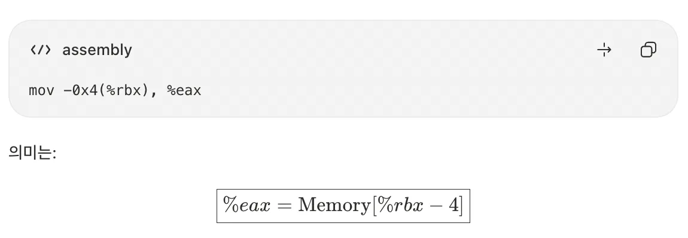

⇒ %rsi에 저장된 값을 찾으면 됨.
(gdb) x/s 0x4024c0
0x4024c0: "Current frameworks are mainly designed for a solo training case."
phase_2:
x1 x2 x3 x4 x5 x6 → 6개의 정수를 입력
⇒ 답은 1 2 4 8 16 32

phase_3:
x1 x2 를 입력
%rcx → 두 번째 정수를 저장할 주소%rdx → 첫 번째 정수를 저장할 주소x1 = 4라면, → x2 = 0
답 : 4 0
phase_4:
x1 x2
(gdb) disas func4
Dump of assembler code for function func4:
0x0000000000401008 <+0>: push %r12
0x000000000040100a <+2>: push %rbp
0x000000000040100b <+3>: push %rbx
0x000000000040100c <+4>: mov %edi,%ebx %ebx = %edi = 1:5 2:4.. 5:0
0x000000000040100e <+6>: test %edi,%edi -> %edi끼리 &
0x0000000000401010 <+8>: jle 0x401036 <func4+46> -> %edi <= 0 1:X 2:X... O
0x0000000000401012 <+10>: mov %esi,%ebp -> %ebp = %esi 5
0x0000000000401014 <+12>: mov %esi,%eax -> %eax = %esi 5
0x0000000000401016 <+14>: cmp $0x1,%edi -> %edi-1 1:4 2:3...5:0
0x0000000000401019 <+17>: je 0x40103b <func4+51> -> 1:X. 2:X... 5:O
0x000000000040101b <+19>: lea -0x1(%rdi),%edi -> %edi = (%rdi -1)
0x000000000040101e <+22>: callq 0x401008 <func4>
0x0000000000401023 <+27>: lea (%rax,%rbp,1),%r12d -> %r12d = %rax + %rbp
0x0000000000401027 <+31>: lea -0x2(%rbx),%edi ->
0x000000000040102a <+34>: mov %ebp,%esi
0x000000000040102c <+36>: callq 0x401008 <func4>
0x0000000000401031 <+41>: add %r12d,%eax
0x0000000000401034 <+44>: jmp 0x40103b <func4+51>
0x0000000000401036 <+46>: mov $0x0,%eax -> %eax = 0
0x000000000040103b <+51>: pop %rbx
0x000000000040103c <+52>: pop %rbp
0x000000000040103d <+53>: pop %r12
0x000000000040103f <+55>: retq
End of assembler dump.def func4():
%ebx = %edi
if %edi<= 0:return
%ebp = %esi
%eax = %esi
if %edi = x: return
%edi = %rdi -1
func4()
%r12d = %rax + %rbp
%edi = %rbx - 2
%esi = %ebp
func4()
%eax += %r12d
-> <+51>
<+46> : %eax = 0
return Let %edi = n / %esi = x
def func4(n,x):
%ebx = n
if n <= 0: return 0
%ebp = x
if n == 1: return x
a = func4(n-1,x)
%r12d = a + x
b = func4(n-2,x)
return r12d + bf(0,x) = 0
f(1,x) = x
f(2,x) = 2x
f(3,x) = 4x
f(4,x) = 7x
f(5,x) = 12x
phase_5
%rcx = (%rsp + 8) → x2
%rdx = (%rsp + 0xc) → x1
%esi = 0x40280d
%eax = 0
__isoc99_sscanf@plt : (x1, x2)를 받음. -> %eax = 인자의 개수
if %eax > 1: jump<+39> 인자 수 : 2이상.
explode_bomb
<+39>
%eax = x1
%eax &= 0xf -> %eax에서 마지막 4 비트만 남김.
x1 = %eax
if %eax = 0xf: explode_bomb => x1은 마지막 4개 비트가 1111이면 안됨.
%ecx = 0
%edx = 0
loop:
%edx += 1
cltq : %eax를 %rax로 확장
%eax = (0x402580 + 4 * %rax) -> arr
%ecx += %eax
if %eax != 0xf: loop -> 그니까 %eax는 0xf 이어야 함.
%eax = 15 -> 배열을 따라가다 15에 도달하면 종료. 입력 x1 = 15라는 뜻 아님.
if %edx != 0xf: explode_bomb loop 반복 횟수 != 15
if %ecx == x2 : RETURN sum(%eax in loop) == x2
explode_bomb 0x402580 → arr = [10, 2, 14, 7, 8, 12, 15, 11, 0, 4, 1, 13, 3, 9, 6, 5]
5 → 12 → 3 → 7 → 11 → 13 → 9 → 4 → 8 → 0 → 10 → 1 → 2 → 14 → 6 → 15
5, 115
phase_6
0x00000000004010fe <+0>: push %r13
0x0000000000401100 <+2>: push %r12
0x0000000000401102 <+4>: push %rbp
0x0000000000401103 <+5>: push %rbx
0x0000000000401104 <+6>: sub $0x58,%rsp
0x0000000000401108 <+10>: lea 0x30(%rsp),%rsi
0x000000000040110d <+15>: callq 0x4015aa <read_six_numbers>
0x0000000000401112 <+20>: lea 0x30(%rsp),%r13
0x0000000000401117 <+25>: mov $0x0,%r12d
0x000000000040111d <+31>: mov %r13,%rbp
0x0000000000401120 <+34>: mov 0x0(%r13),%eax
0x0000000000401124 <+38>: sub $0x1,%eax
0x0000000000401127 <+41>: cmp $0x5,%eax
0x000000000040112a <+44>: jbe 0x401131 <phase_6+51>
0x000000000040112c <+46>: callq 0x401574 <explode_bomb>
0x0000000000401131 <+51>: add $0x1,%r12d
0x0000000000401135 <+55>: cmp $0x6,%r12d
0x0000000000401139 <+59>: jne 0x401142 <phase_6+68>
0x000000000040113b <+61>: mov $0x0,%esi
0x0000000000401140 <+66>: jmp 0x401184 <phase_6+134>
0x0000000000401142 <+68>: mov %r12d,%ebx
0x0000000000401145 <+71>: movslq %ebx,%rax
0x0000000000401148 <+74>: mov 0x30(%rsp,%rax,4),%eax
0x000000000040114c <+78>: cmp %eax,0x0(%rbp)
0x000000000040114f <+81>: jne 0x401156 <phase_6+88>
0x0000000000401151 <+83>: callq 0x401574 <explode_bomb>
0x0000000000401156 <+88>: add $0x1,%ebx
0x0000000000401159 <+91>: cmp $0x5,%ebx
0x000000000040115c <+94>: jle 0x401145 <phase_6+71>
0x000000000040115e <+96>: add $0x4,%r13
0x0000000000401162 <+100>: jmp 0x40111d <phase_6+31>
0x0000000000401164 <+102>: mov 0x8(%rdx),%rdx
0x0000000000401168 <+106>: add $0x1,%eax
0x000000000040116b <+109>: cmp %ecx,%eax
0x000000000040116d <+111>: jne 0x401164 <phase_6+102>
0x000000000040116f <+113>: jmp 0x401176 <phase_6+120>
0x0000000000401171 <+115>: mov $0x6042f0,%edx
0x0000000000401176 <+120>: mov %rdx,(%rsp,%rsi,2)
0x000000000040117a <+124>: add $0x4,%rsi
0x000000000040117e <+128>: cmp $0x18,%rsi
0x0000000000401182 <+132>: je 0x401199 <phase_6+155>
0x0000000000401184 <+134>: mov 0x30(%rsp,%rsi,1),%ecx
0x0000000000401188 <+138>: cmp $0x1,%ecx
0x000000000040118b <+141>: jle 0x401171 <phase_6+115>
0x000000000040118d <+143>: mov $0x1,%eax
0x0000000000401192 <+148>: mov $0x6042f0,%edx
0x0000000000401197 <+153>: jmp 0x401164 <phase_6+102>
0x0000000000401199 <+155>: mov (%rsp),%rbx
0x000000000040119d <+159>: lea 0x8(%rsp),%rax
0x00000000004011a2 <+164>: lea 0x30(%rsp),%rsi
0x00000000004011a7 <+169>: mov %rbx,%rcx
0x00000000004011aa <+172>: mov (%rax),%rdx
0x00000000004011ad <+175>: mov %rdx,0x8(%rcx)
0x00000000004011b1 <+179>: add $0x8,%rax
0x00000000004011b5 <+183>: cmp %rsi,%rax
0x00000000004011b8 <+186>: je 0x4011bf <phase_6+193>
0x00000000004011ba <+188>: mov %rdx,%rcx
0x00000000004011bd <+191>: jmp 0x4011aa <phase_6+172>
0x00000000004011bf <+193>: movq $0x0,0x8(%rdx)
0x00000000004011c7 <+201>: mov $0x5,%ebp
0x00000000004011cc <+206>: mov 0x8(%rbx),%rax
0x00000000004011d0 <+210>: mov (%rax),%eax
0x00000000004011d2 <+212>: cmp %eax,(%rbx)
0x00000000004011d4 <+214>: jle 0x4011db <phase_6+221>
0x00000000004011d6 <+216>: callq 0x401574 <explode_bomb>
0x00000000004011db <+221>: mov 0x8(%rbx),%rbx
0x00000000004011df <+225>: sub $0x1,%ebp
0x00000000004011e2 <+228>: jne 0x4011cc <phase_6+206>
0x00000000004011e4 <+230>: add $0x58,%rsp
0x00000000004011e8 <+234>: pop %rbx
0x00000000004011e9 <+235>: pop %rbp
0x00000000004011ea <+236>: pop %r12
0x00000000004011ec <+238>: pop %r13
0x00000000004011ee <+240>: retq push %r13
push %r12
push %rbp
push %rbx
sub $0x58,%rsp
%rsi = %rsp + 030
read_six_numbers: 정수 6개를 스택에 저장 (반환값 %eax를 개수로 사용하지 않음)
0x30(%rsp) = x1
0x34(%rsp) = x2
...
0x44(%rsp) = x6
%r13 = 0x30(%rsp) = %rsp + 030
%r12d = 0x0
----
<+31>
%rbp = %r13
%eax = (%r13)
%eax -= 1
if %eax <= 5 : jmp<+51>
explode_bomb
<+51>
%r12d += 1
if r12d != 0x6: jmp<+68>
%esi = 0x0
jmp<+134>
<+68>
%ebx = %r12d
-------
<+71>
%rax = 확장된 %ebx
%eax = (0x30 + %rsp + 4*%rax)
if %eax != Memory[%rbp]: jmp<+88>
explode_bomb
<+88>
%ebx += 0x1
if %ebx <= 0x5: jmp <+71>
%r13 += 0x4
jmp<+31>
=========
<+102>
%rdx = Memory[%rdx + 8] (현재 노드의 next 포인터)
%eax += 0x1
%eax != %ecx: jmp<+102>
%edx = 0x6042f0
jmp<+120>
<+115>
%edx = 0x6042f0
<+120>
(%rsp+ 2*%rsi) = %rdx
%rsi += 4
if %rsi == 0x18 : jmp<+155>
--------
<+134>
%ecx = (0x30 + %rsp + rsi)
if %ecx <= 1 jmp<+115>
%eax = 1
%edx = 0x6042f0
jmp<+102>
=========
<+155>
%rbx = (%rsp)
%rax = %rsp + 8
%rsi = rsp + 48
%rcx = %rbx
<+172>
%rdx = (%rax)
(8 + %rcx) = %rdx
%rax += 8
if %rax == %rsi: jmp<+193>
%rcx = %rdx
jmp<+172>
==========
<+193>
(%rdx+8) = 0
%ebp = 5
<+206>
%rax = (rbx + 8)
%eax = (%rax)
if 현재 노드 value <= 다음 노드 value: jmp <+221>
explode_bomb
<+221>
%rbx = ($rbx + 8)
%ebp -= 1
if jne -> <+206>
%rsp += 0x58MEMORY
0x30(%rsp) = x1
0x34(%rsp) = x2
...
0x44(%rsp) = x6 -> 초기값 저장%rsi
1. %rsp + 0x30 :
2. 0x0 -> 다음 단계
4. 0x0
%r13
1. %rsp + 0x30
2. %rsp + 0x34
...
%r12d
1. 0x0
2. 0x1
3. 0x2
.. -> 6까지 반복.
%rbp
1. %r13 = %rsp + 0x30 =x1
2. ~ = x2
%eax
1. (%r13) = %rsp+30 = x1
2. x1 -1
2. expended %ebx = 0x1
3. (0x30 + %rsp + 4*%rax) = (3*16 + %rsp + 4) = (%rsp + 52
= x2
4. x2
5. x2 -1
%ebx
1. %r12d = 0x1
2. 0x2
...
4. ebx는 비교 대상 배열 인덱스 (0x401145는 명령어 주소)
if 1 <= x1 <= 6 -> jmp <+51> (unsigned jbe; x1 - 1 <= 5)
=> bomb을 피하려면 항상. x1 -1 <= 5
--
if %r12d != 0x6 -> jmp<+68>
처음에는 0->1...이라서 아님.
--
if %eax == Memory[%rbp]: bomb (두 입력값이 같으면 폭발)
x2 != x1
--
if ebx <= 5 -> jump <+71> (0x401145는 점프 주소)
-> ebx = 6이 되면 내부 반복 종료1 <= x1, x2, x3, x4, x5, x6 <= 6
x1, x2,x3,x4,x5,x6 모두 서로 달라야 함.
%rsi
1. 0x0
2. 0x4
%ecx
1. (0x30 + %rsp + rsi) = (rsp+48) = x1
%edx
1. 0x6042f0
---
if %ecx <= 1 => jmp<+115>
-> x1<=1이면 -> jmp to 115
else
%eax = 1
%edx = 0x6042f0
jmp to 102
---
(%rsp+ 2*%rsi) = %rdx
-> 첫번째 스택 = 0x6042f0
if %rsi == 0x18 == 24 -> jmp<+155>
-> 24가 될 때까지 반복.
---
<102>phase_6 이어서 분석 (기존 <+102>부터)
# 앞에서 알아낸 조건
x1, x2, x3, x4, x5, x6는 모두 1~6 범위
x1~x6 사이에 같은 값이 있으면 explode_bomb
MEMORY
0x30(%rsp) = x1
0x34(%rsp) = x2
0x38(%rsp) = x3
0x3c(%rsp) = x4
0x40(%rsp) = x5
0x44(%rsp) = x6
(%rsp) = 선택한 node1 주소
0x8(%rsp) = 선택한 node2 주소
0x10(%rsp) = 선택한 node3 주소
...
0x28(%rsp) = 선택한 node6 주소# <+134> : 입력 x_i로 몇 번째 노드를 선택할지 결정
mov 0x30(%rsp,%rsi,1), %ecx
-> %ecx = Memory[%rsp + 0x30 + %rsi] = 현재 입력 x_i
cmp $0x1, %ecx
jle <+115>
-> x_i <= 1이면 첫 번째 노드 사용
mov $0x1, %eax
mov $0x6042f0, %edx
jmp <+102>
-> x_i > 1이면 첫 번째 노드에서 시작해서 next로 이동
# <+102> : 노드 연결 따라가기
mov 0x8(%rdx), %rdx
-> %rdx = Memory[%rdx + 8] = 현재 노드의 next 포인터
-> %rdx += 8 이 아님!! 8바이트 뒤에 저장된 '주소'를 읽음
add $0x1, %eax
cmp %ecx, %eax
jne <+102>
-> %eax가 입력값 x_i와 같아질 때까지 next 이동
-> 결국 %rdx = x_i번째 노드의 주소
# <+115>
mov $0x6042f0, %edx
-> 첫 번째 노드의 주소
# <+120>
mov %rdx, (%rsp,%rsi,2)
-> Memory[%rsp + 2*%rsi] = 선택한 노드 주소
-> %rsi = 0,4,8,12,16,20
-> 저장 주소 = rsp, rsp+8, rsp+16, ..., rsp+40
add $0x4, %rsi
cmp $0x18, %rsi
je <+155>
-> %rsi == 24가 되면 6개 선택 완료
-> 아니면 <+134>로 돌아가 다음 입력 처리# <+155> : 선택한 노드 6개를 입력 순서대로 다시 연결
mov (%rsp), %rbx
-> %rbx = 첫 번째로 선택한 노드 주소
lea 0x8(%rsp), %rax
-> %rax = 다음 노드 주소가 저장된 스택 위치
lea 0x30(%rsp), %rsi
-> %rsi = 노드 주소 배열의 끝 위치(rsp+48)
mov %rbx, %rcx
-> %rcx = 현재 노드 주소
# <+172>
mov (%rax), %rdx
-> %rdx = 스택에 보관한 다음 노드 주소
mov %rdx, 0x8(%rcx)
-> Memory[%rcx + 8] = %rdx
-> 현재 노드의 next를 다음 노드에 연결
add $0x8, %rax
cmp %rsi, %rax
je <+193>
mov %rdx, %rcx
jmp <+172>
-> 8바이트씩 이동하며 next 포인터 연결 반복# <+193> : 마지막 노드의 next = NULL
movq $0x0, 0x8(%rdx)
mov $0x5, %ebp
-> 6개의 노드를 비교하려면 인접 쌍 5개 검사
# <+206>
mov 0x8(%rbx), %rax
-> %rax = 현재 노드의 next 포인터
mov (%rax), %eax
-> %eax = 다음 노드의 value (32비트)
cmp %eax, (%rbx)
-> 현재 노드 value - 다음 노드 value
jle <+221>
-> 현재 노드 value <= 다음 노드 value이면 통과
-> 아니면 explode_bomb
# <+221>
mov 0x8(%rbx), %rbx
-> %rbx = 다음 노드 주소
sub $0x1, %ebp
jne <+206>
-> 총 5번 비교정리
numbers = [x1, x2, x3, x4, x5, x6]
# 1. 1~6이 각각 정확히 한 번씩 들어와야 함
assert sorted(numbers) == [1, 2, 3, 4, 5, 6]
# 2. 입력 숫자 i = 연결 리스트의 i번째 노드를 선택
chosen = [node_at_position(i) for i in numbers]
# 3. 선택한 순서대로 노드를 다시 연결
for i in range(5):
chosen[i].next = chosen[i+1]
chosen[5].next = None
# 4. 노드의 value는 오름차순(같아도 됨)
for i in range(5):
assert chosen[i].value <= chosen[i+1].value따라서: 입력 정수 자체를 정렬하는 게 아니라, 각 숫자가 선택하는 노드의 value 순서를 오름차순으로 만드는 문제. 노드 6개의 실제 값과 최종 정답은 페이지 맨 아래에 확인하여 추가함.
# 메모리 확인만 수행. bomb 실행하지 않음.
x/4wx 0x6042f0
x/gx 0x6042f8
# 두 번째 명령어로 얻은 next 주소에서도 value와 next 확인앞에서 잘못 적은 부분 수정 메모
mov 0x30(%rsp,%rax,4), %eax
-> %eax = Memory[%rsp + 48 + 4*%rax] (주소 자체 아님)
cmp %eax, 0x0(%rbp)
-> 입력값끼리 비교함. %rbp는 입력값이 아닌 '입력값 주소'
cmp $0x5, %ebx ; jle <+71>
-> %ebx <= 5이면 점프. 점프 주소 0x401145와 비교하는 게 아님
mov 0x8(%rdx), %rdx
-> %rdx = node.next (노드의 다음 포인터)
cmp %eax, (%rbx) ; jle <+221>
-> 현재 노드 value <= 다음 노드 valuephase_6 정답 (실행 파일 데이터 확인)
Mac ~/Downloads/bomb13.tar의 bomb13/bomb에서 0x6042f0 연결 리스트 노드를 직접 읽어서 확인.
Node 1 : value = 651, address = 0x6042f0, next = 0x604300
Node 2 : value = 232, address = 0x604300, next = 0x604310
Node 3 : value = 299, address = 0x604310, next = 0x604320
Node 4 : value = 216, address = 0x604320, next = 0x604330
Node 5 : value = 751, address = 0x604330, next = 0x604340
Node 6 : value = 336, address = 0x604340, next = 0x0value 오름차순:
216 < 232 < 299 < 336 < 651 < 751
Node 번호:
4 → 2 → 3 → 6 → 1 → 5
Phase 6 입력: 4 2 3 6 1 5확인 근거 : Phase 6의 cmp %eax,(%rbx); jle는 현재 노드 value ≤ 다음 노드 value 조건이다. 그래서 실제 value가 오름차순이 되도록 노드 번호를 입력해야 한다. 노드 번호 자체를 오름차순으로 쓰는 문제가 아님.
Phase 1~6 정답 모음
Current frameworks are mainly designed for a solo training case.
1 2 4 8 16 32
4 0
24 2
5 115
4 2 3 6 1 5※ 위 Phase 6 노드 값은 Mac에 내려받은 bomb13.tar 실행 파일의 정적 데이터를 기준으로 계산했으며, 서버의 ~/bomb13/bomb 파일과 별도 해시 대조는 하지 않음. 노드 시작 주소와 Phase 1 문자열은 기존 분석과 일치함.